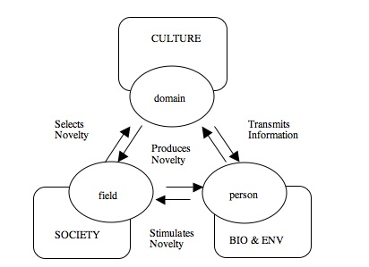

The Creativity Systems Model
Mihaly Csikszentmihalyi created what he called a Systems Model for Creativity, shown in the Figure below.

Here are some brief extracts from his book[Reference 1]
Many of these books and articles have tried to
answer what has been thought to be the most fundamental question: What is creativity? But no one has raised the simple question that should precede attempts at defining, measuring, or enhancing, namely: Where is creativity?
On hearing this question, most people would answer “Why, in the creative person’s head, of course”.
After studying creativity on and off for almost a quarter of a century, I have come to the reluctant conclusion that this is not the case. We cannot study creativity by isolating individuals and their works from the social and historical milieu in which their actions are carried out.
This is because what we call creative is never the result of individual action alone; it is the product of three main shaping forces:
- a set of social institutions, or field, that selects from the variations produced by individuals those that are worth preserving;
- a stable cultural domain that will preserve and transmit the selected new ideas or forms to the following generations;
- and finally the individual, who brings about some change in the domain, a change that the field will consider to be creative.
So the question “Where is creativity?” cannot be answered solely with reference to the person and the person’s work. Creativity is a phenomenon that results from interaction between these three systems. Without a culturally defined domain of action in which innovation is possible, the person cannot even get started. And without a group of peers to evaluate and confirm the adaptiveness of the innovation, it is impossible to differentiate what is creative from what is simply statistically improbable or bizarre.
If we think about it, the reason we believe that Leonardo or Einstein was creative is that we have read that that is the
case, we have been told it is true; our opinions about who is creative and why ultimately are based on faith. We have faith in the domains of art and science, and we trust the judgment of the field, that is, of the artistic and scientific establishments. There is nothing wrong with this, because it is an inevitable situation. But by recognizing it, we must also accept some of its consequences, namely, that any attribution of creativity must be relative, grounded only in social agreement.
Discussion
What are the salient points in this model?
- A rather “societal” view of creativity! Rather than a psychic view!
- The influence of environment and people around the individual
- A defined domain of work, with a defined language to discuss its ideas and concepts.
- The “evaluation” of the creative act by field members, who act as gatekeepers
Is this nonplussing? Contrary to what you believe? Outright disturbing?
I think this is immensely reassuring and humbling at the same time: reassuring because a creative act can be performed by anybody, not some arbitrarily defined “gifted individual”, and humbling, because if field members don’t like your act, or if you don’t have access to the field, you might not make it. It is fair and unfair, but immensely real.
Why this Model matters to us
As we will see later in this course, classical TRIZ was developed by Genrikh Altshuller based on an evaluation of more than 25000 patents. He found “design patterns” that had been repeatedly used across patents and classified them for our use. There is a strong sense of history and society right at the heart of TRIZ.
Further, the patents the study of which helped Altshuller create TRIZ in the first place belong with domains that we may not necessarily encounter. And yet, the Principles of TRIZ straddle domains and help “cross-domain” solutions to happen: the use of principles in one domain in another, unrelated, domain. (More when we enter TRIZ proper)
Some Examples from History
Botticelli was for centuries considered to be a coarse painter, and the women he painted “sickly” and “clumsy”. Only in the mid-nineteenth century did some critics begin to reevaluate his work and see in it creative anticipations of modern sensibility. To what extent was creativity contained in Botticelli’s canvases, and to what extent did it emerge
from the interpretive efforts of critics like Ruskin?
…our view of Mendel’s contribution to genetics is generally quite wrong. The impression we have is that Mendel made a series of epochal experiments in the genetic transmission of traits in the 1860s, but that his creativity was not recognized by the scientific community until about 40 years later. This view is radically mistaken in a subtle but essential respect. (Brannigan) argues that Mendel’s experiments were not and could not have been contributions
to genetics at the time they were made. Their implications for the theory of variation and natural selection were discovered only in 1900 by William Bateson
and other evolutionists looking for a mechanism that explained discontinuous inheritance. Within their theoretical framework, Mendel’s work suddenly acquired an importance that it had lacked before, even in the mind of Mendel himself.